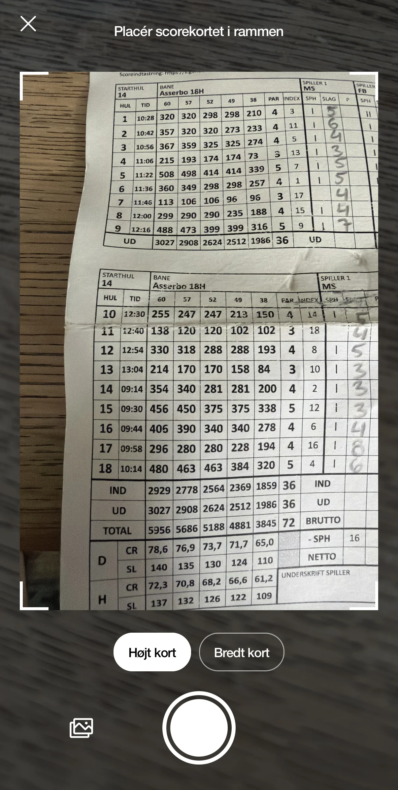
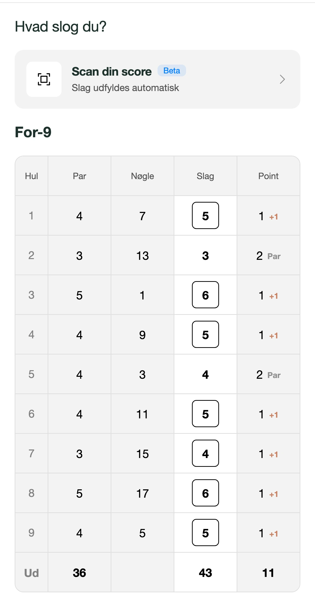
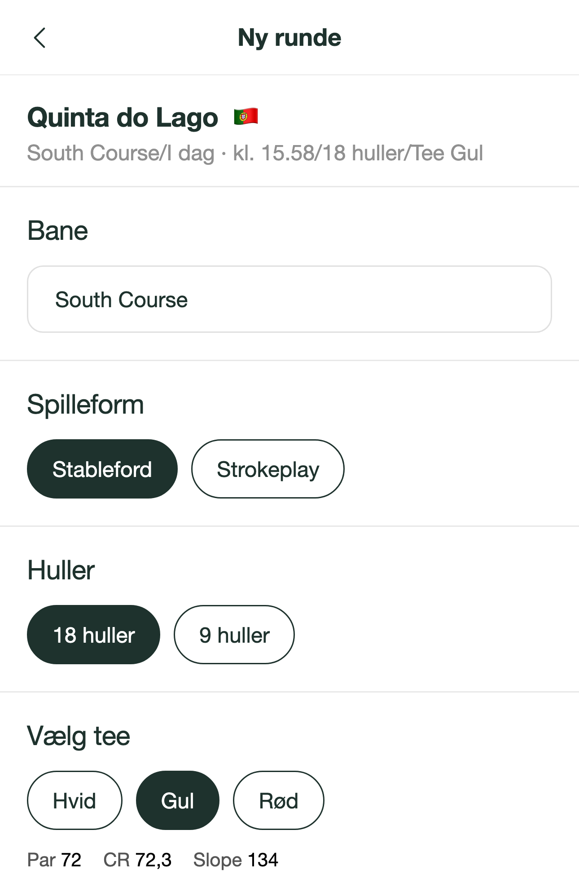
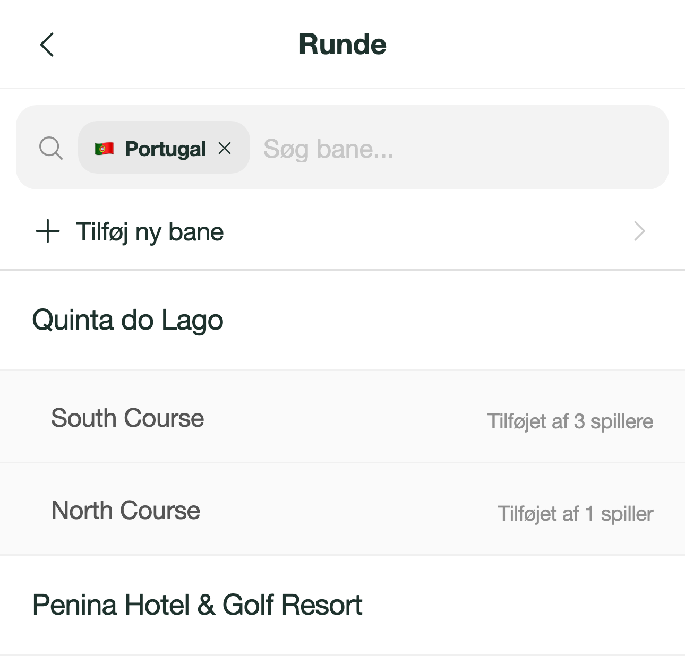
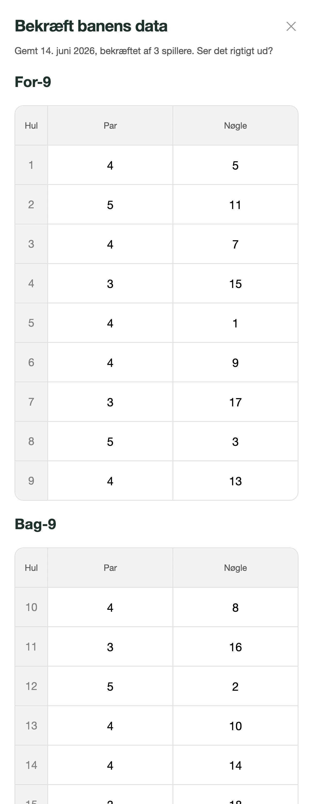
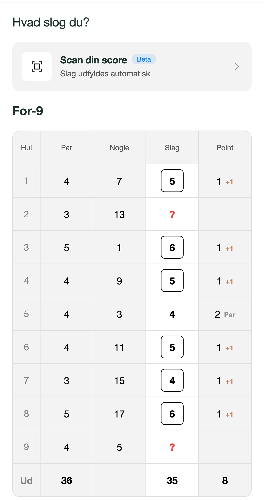
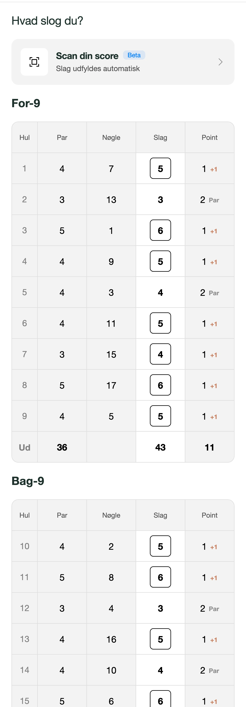

Scan dit scorekort
Kan jeg scanne mit scorekort i stedet for at taste det?
Ja. I Golfsocial tager du et billede af scorekortet, og appen udfylder dine slag for dig. Det virker på danske baner og på baner i udlandet, og runden kan tælle med i dit DGU-handicap.


Sådan scanner du dit scorekort i Golfsocial
Fra kortet i hånden, til runden ligger i feedet.
- Hent Golfsocial i App Store, og opret dig.
- Opret en ny runde, og søg banen frem. Findes den ikke, tilføjer du den selv: land, klub og bane.
- Tryk Scan din score, og tag et billede af scorekortet.
- Appen udfylder dine slag. På en bane, der er ny i appen, læser den også par, nøgle, CR og slope fra kortet.
- Tjek tallene. Det, scanneren ikke kunne læse, står med rødt, så du kan rette det.
- Vælg din markør, og gem runden. Når markøren har godkendt, tæller runden med i dit DGU-handicap, og den kommer i feedet.
Kan jeg registrere en runde fra udlandet?
Ja. Du kan tilføje banen i Golfsocial, også når den ligger uden for Danmark. Vælg landet, og find banen, eller tilføj den selv. Med CR og slope fra scorekortet tæller runden til dit handicap, præcis som hjemme.


Hvad hvis scanneren læser et tal forkert?
Du ser altid tallene, før du gemmer. Det, scanneren ikke kunne læse, står med rødt. Tryk på feltet, og ret tallet. På en bane, der allerede ligger i appen, kan du også se banens par, nøgle og tees igennem og scanne igen.


Scan også kortet på danske baner
Scanneren er ikke kun til udlandet. Tilføjer du en runde på en dansk bane, kan du også bare tage et billede af kortet. Så er dine slag inde, uden at du skal taste hul for hul.

Omkring 600 golfere har logget næsten 800 runder i Golfsocial.
Golfsocial er gratis at spille med vennerne: live score, spilleformerne, grupperne og feedet.
Spørgsmål og svar
Kan jeg scanne mit scorekort i en golf-app?
Ja. I Golfsocial tager du et billede af scorekortet, og appen udfylder dine slag, så du ikke skal taste hul for hul.
Hvilken golf-app kan scanne et scorekort?
Golfsocial. Scanneren virker på danske baner og på baner i udlandet.
Virker scanneren på danske baner?
Ja. Tilføjer du en runde på en dansk bane, kan du tage et billede af kortet. Så er dine slag inde, uden at du skal taste hul for hul.
Kan jeg registrere en runde fra udlandet til mit handicap?
Ja. Du tilføjer banen i Golfsocial, også når den ligger uden for Danmark. Med CR og slope fra scorekortet tæller runden til dit handicap.
Hvad gør jeg, hvis banen ikke findes i appen?
Du tilføjer den selv: land, klub og bane. Scanneren læser par, nøgle, CR og slope fra scorekortet.
Hvad læser scanneren fra scorekortet?
Dine slag. På en bane, der er ny i appen, læser den også par, nøgle, CR og slope.
Hvad hvis scanneren læser et tal forkert?
Du tjekker tallene, før du gemmer. Det, scanneren ikke kunne læse, står med rødt, og du kan rette alle felter.
Tæller en scannet runde til mit DGU-handicap?
Ja. Vælg en medspiller som markør, og gem runden. Når markøren har godkendt runden, tæller den med i dit DGU-handicap.
Kan mine venner se runden?
Ja. Runden kommer i feedet, hvor dine venner kan se scoren og skrive en kommentar.
Hvad koster det?
Golfsocial er gratis at spille med vennerne: live score, spilleformerne, grupperne og feedet.
Hvor mange bruger Golfsocial?
Omkring 600 golfere har logget næsten 800 runder i Golfsocial (november 2026).